# Libraries
library(ggplot2)
library(reshape)
library(tidyr)
library(gridExtra)
# Plot theme
theme_set(theme_light())
# Reproducibility
set.seed(555)Implementing Black Scholes and Vasiciek Models in R
Quantitative Finance
Option Pricing
R
This is a report I completed in 2020 during my time studying towards my masters degree in Quantitative Finance at Lancaster University.
Absract:
In this mini project we investigate the properties of financial stochastic processes. We first consider the implementation of the Black-Scholes model for determining the price of European call options on stock before then utilising the Vasicek model to calculate the future price of bonds. We discuss the background, benefits and drawbacks of both models before conducting our investigation and summarising our findings.
Introduction
The Black-Scholes model is a mathematical model developed by the economists Fischer Black, Myron Scholes and Robert Merton which is widely used in the pricing of options contacts. The model assumes that the price of heavily traded assets follows a geometric Brownian motion with constant drift and volatility. When applied to a stock option, the model incorporates the constant price variation of the stock, the time value of money, the option’s strike price, and the time to the option’s expiry.
The Vasicek model is a mathematical model used in financial economics to estimate potential pathways for future interest rate changes. The model states that the movement of interest rates is affected only by random (stochastic) market movements and models interest rate movements as a factor composed of market risk, time, and equilibrium value - where the rate tends to revert towards the mean of those factors over time.
We will first investigate how the price of a European call option - as given by the Black- Scholes model - varies with changes in time, interest rates, strike price and volatility. We will then simulate an Ornstein-Uhlenbeck process and use this to simulate the price of a bond - using the Vasicek model - over a given time period before evaluating the distribution of the simulated prices.
We conduct this project using the programming language R along with the ggplot2, reshape, tidyr and gridExtra packages.
The Black-Scholes Model
The price at time \(t_0=0\) of a European call option (‘ECO’) on a stock with strike price \(c\), expiry time \(t_0\), initial stock price \(S_0\), interest rate \(\rho\) and volatility \(\sigma\) is given by the Black-Scholes (‘BS’) formula. This is given below in Equation 1
\[ \begin{aligned} P_{t_0}=&S_0\Phi\left(\frac{\log(S_0/c)+(\rho+\sigma^2/2)t_0}{\sigma\sqrt{t_0}}\right)\\\\ &-c\exp(-\rho t_0)\Phi\left(\frac{\log(S_0/c)+(\rho-\sigma^2/2)t_0}{\sigma\sqrt{t_0}}\right) \end{aligned}\tag{1} \]
In Figure 1 below we plot the price over time of the ECO, \(P_t\), for \(0\leq t\leq 10\) with \(s_0=1\), \(\sigma^2=0.02\), \(\rho=0.03\) and \(c=1\).
# Define initial values
S0 = 1
sigma = sqrt(0.02)
rho = 0.03
c = 1
t = seq(0.001, 10, by=0.001)
# Define price
P = S0*pnorm((log(S0/c)+(rho+(sigma^2)/2)*t)/(sigma*sqrt(t)))-
(c*exp(-rho*t))*pnorm((log(S0/c)+(rho-(sigma^2)/2)*t)/(sigma*sqrt(t)))
# Produce plot
data.frame(
Price = P,
Time = t
) |>
ggplot(aes(Time, Price)) +
geom_line() +
labs(
y = "Option price",
x = "Time"
)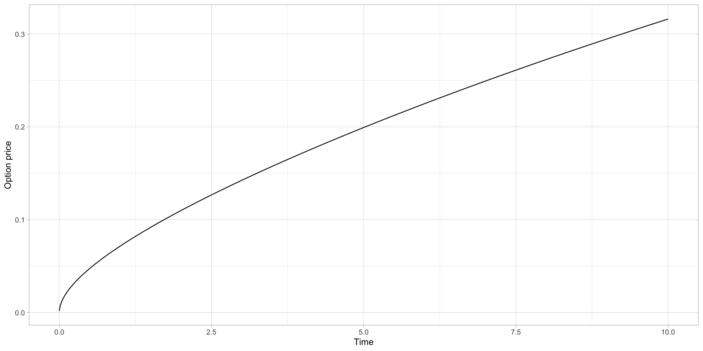
We see that the price \(P_t\) is increasing over time, which makes sense as the values of the ECO should be dependent on the time the underlying stock has to increase in value. From Equation 1 we can see that \(S_0\) as \(t\rightarrow\infty\).
We plot the price \(P_{10}\) at time \(t=10\) as we vary each of \(\sigma\), \(\rho\) and \(c\) in turn. These are shown below in Figure 2, Figure 3 and Figure 4 respectively.
# Fix time
t10=10
# Define varying sigma
sigma1=seq(0,2, by=0.01)
# Calculate new price series
P1=S0*pnorm((log(S0/c)+(rho+(sigma1^2)/2)*t10)/(sigma1*sqrt(t10)))-
(c*exp(-rho*t10))*pnorm((log(S0/c)+(rho-(sigma1^2)/2)*t10)/(sigma1*sqrt(t10)))
# Produce plot
data.frame(
Price = P1,
Volatility = sigma1
) |>
ggplot(aes(sigma1,P1)) +
geom_line() +
labs(
y = "Option price at time t=10",
x = "Volatility"
)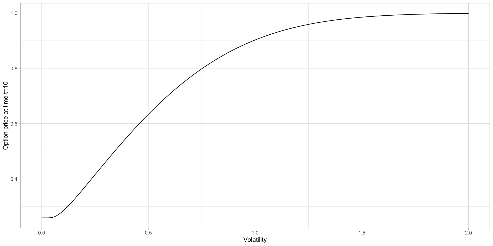
# define varying rho
rho2=seq(0, 0.8, by=0.005)
# calculate new price series
P2=S0*pnorm((log(S0/c)+(rho2+(sigma^2)/2)*t10)/(sigma*sqrt(t10)))-
(c*exp(-rho2*t10))*pnorm((log(S0/c)+(rho2-(sigma^2)/2)*t10)/(sigma*sqrt(t10)))
# produce plot for figure 3
data.frame(
Price = P2,
Interest = rho2
) |> ggplot(aes(Interest, Price)) +
geom_line() +
labs(
y = "Option price at time t=10.",
x = "Interest Rate"
)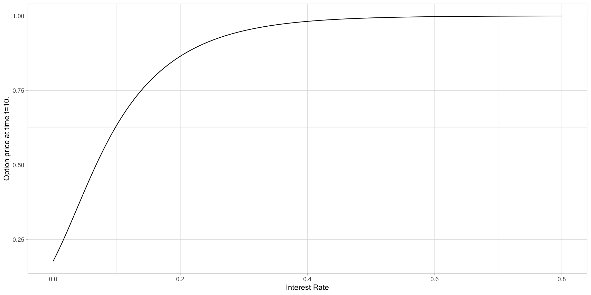
# define varying c
c3=seq(0,5, by=0.01)
# calculate new price series
P3=S0*pnorm((log(S0/c3)+(rho+(sigma^2)/2)*t10)/(sigma*sqrt(t10)))-
(c3*exp(-rho*t10))*pnorm((log(S0/c3)+(rho-(sigma^2)/2)*t10)/(sigma*sqrt(t10)))
# produce plot for figure 4
data.frame(
Price = P3,
Strike = c3
) |>
ggplot(aes(Strike, Price)) +
geom_line() +
labs(
x = "Strike Price",
y = "Option Price"
)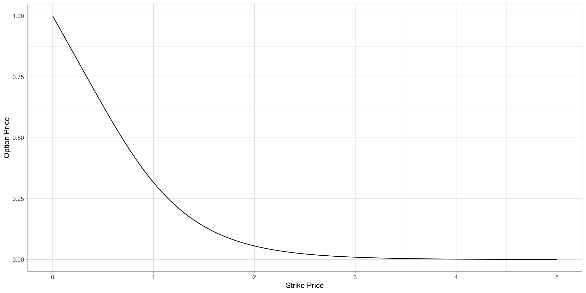
As both volatility \(\sigma\) and interest rates \(\rho\) increase we see that \(P_{10}\rightarrow S_0\). This is because high underlying stock volatility and interest rates both increase the potential option return which increases the options value up to the initial price of the stock. The option value is limited to this value because if the option price were to rise above the stock price then there would be no reason for investors to purchase the option rather than the stock.
As the strike price \(c\) increases we see that \(P_{10}\rightarrow 0\). This is because if the option has a high strike price it is less likely that the underlying stock will reach this price during the period of the option which makes the option less valuable.
Ornstein-Uhlenbeck Processes
The spot-rate \(\{R_s:s>0\}\) is an Ornstein-Uhlenbeck (OU) process - with initial spot rate \(R_0\), long-term mean \(\mu\) and reversion speed \(\theta>0\). This is given by Equation 2 below.
\[ R_s=e^{-\theta s}R_0+(1-e^{-\theta s})\mu+ X_s\;. \tag{2} \]
Here, \(X_s\) is an OU process with volatility \(\sigma>0\) and reversion parameter \(\theta>0\). This is equivalent to stating the following.
\[ \begin{aligned} E[X_s]&=0 \\\\ Cov(X_s, X_t)&=\frac{\sigma^2}{2\theta}e^{-\theta(s+t)}e^{2\theta\min(s, t)-1} \end{aligned}\tag{3} \]
We begin by simulating the OU process \(\{X_s:s>0\}\) with \(\theta = 0.5\) and \(\sigma=0.02\), shown below in Figure 5.
## define the OU function
rOU=function(n,N,Delta,theta,sigma){
times=(0:n)*Delta ##vector of t_0,t_1,..,t_n
X=matrix(0,nrow=N,ncol=n+1)
for(i in 1:n){
x=X[,i]#current value
m=x*exp(-theta*Delta) #mean of new value
v=sigma^2*(1-exp(-2*theta*Delta))/(2*theta) ##variance of new value
X[,i+1]=rnorm(N,m,sqrt(v)) ##simulate new value
}
return(list(X=X,times=times))
}
# define initial conditions
n=10000
N=10
Delta=10/n
theta=0.5
sigma=0.02
# calculate 10 realizations of the OU process using our function
OU=rOU(n, N, Delta, theta, sigma)
# produce plot for Figure 5
tX = data.frame(t(OU$X))
OUfig = data.frame(x=seq_along(tX[,1]), tX)
OUfig = melt(OUfig, id.vars = "x")
cols = 2:11
ggplot(OUfig, aes(x = x, y = value, color = variable)) +
geom_line()+
xlab("Time (s)") + ylab("OU process (X)")+
guides(color = guide_legend(title = "Simulation"))+
scale_color_manual(values = cols)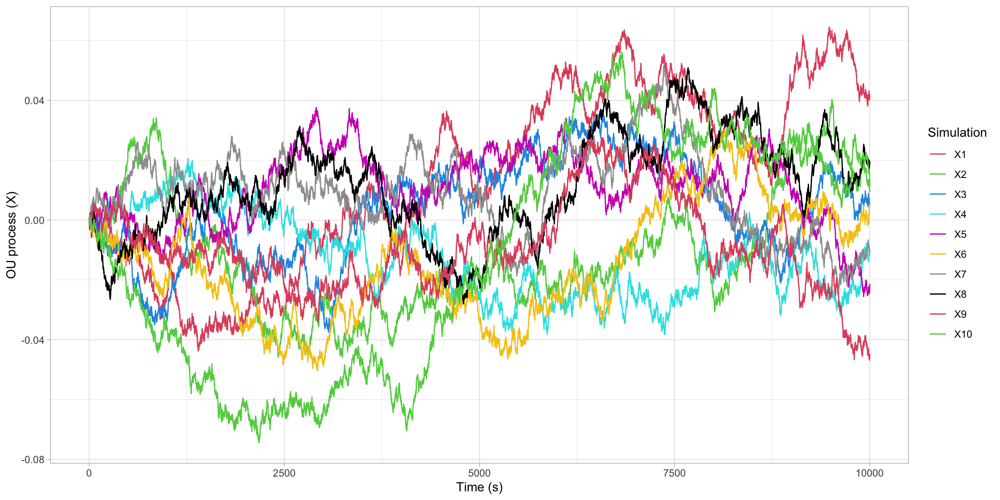
Using our results we simulate the OU process \(\{R_s:0\leq s\leq 10\}\) for \(R_0=0.1\), \(\theta=0.5\), \(\mu=0.05\) and \(\sigma=0.02\) and produce a plot of our results. These are shown below in Figure 6.
# define transformation conditions
R0=0.1
mu=0.05
# transform OU process
R=matrix(0, nrow=N, ncol=n+1)
for(i in 1:N){
R[i,]=exp(-theta*OU$times)*R0+(1-exp(-theta*OU$times))*mu+OU$X[i,]
}
# produce plot
tR = data.frame(t(R))
fig5 <- data.frame(x = seq_along(tR[, 1]), tR)
fig5 <- melt(fig5, id.vars = "x")
cols = 2:11
plot5 = ggplot(fig5, aes(x = x, y = value, color = variable)) +
geom_line() +
xlab("Time (t)") + ylab("Spot Rate (R)")+
guides(color = guide_legend(title = "Simulation"))+
scale_color_manual(values = cols)
plot5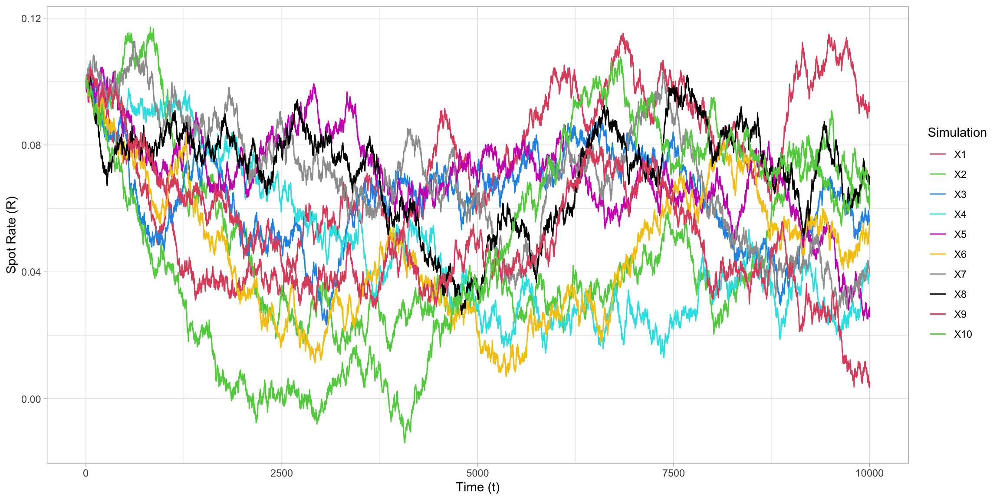
The expressions for the mean and variance of this process are given by:
\[ \begin{aligned} \mathbb{E}[R_s] & =e^{-\theta s}R_0+(1+e^{-\theta s})\mu,\\ \text{Var}[R_s] & =\frac{\sigma^2}{2\theta}(1-e^{-s\theta s}) \end{aligned}\tag{4} \]
We plot the mean \(E[R_s]\) and variance \(V[R_s]\) against time in Figure 7 and Figure 8 below.
# calculate the expectation
expRt=exp(-theta*OU$times)*R0+(1-exp(-theta*OU$times))*mu
# expectation plot
fig6 = data.frame(expRt, OU$times)
ggplot(data = fig6, aes(OU.times,expRt))+geom_line() +
xlab("Time") + ylab("Expectated Value")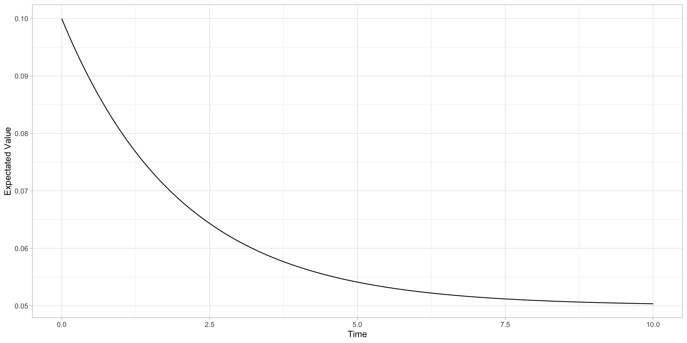
# calculate the variance
varRt=(sigma^2/(2*theta))*(1-exp(-2*theta*OU$times))
# variance plot
fig7 = data.frame(varRt, OU$times)
ggplot(data = fig7, aes(OU.times, varRt))+geom_line() +
xlab("Time") + ylab("Variance")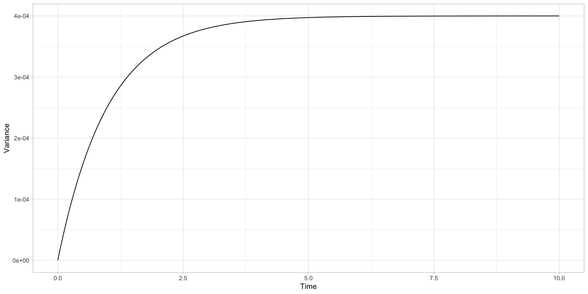
We evaluate what the mean and variance tend to as \(s\rightarrow\infty\), for which we obtain the following expressions:
\[ \begin{aligned} \lim_{(s\rightarrow\infty)}\{E[R_s]\}&=\mu\\ \lim_{(s\rightarrow\infty)}\{V[R_s]\}&=\frac{\sigma^2}{2\theta}. \end{aligned}\tag{5} \]
We can see from Figure 6 that the expectation is tending towards the long-term mean \(\mu=0.05\) as expected. We can also see from Figure 8 that the variance is tending towards 0.04, which is as expected per our expression for the limit of \(V[R_s]\) as \(s\rightarrow\infty\).
If we change the value of \(R_0\) we will change the starting point of the process. If we change the value of \(\mu\) we change the value which the expectation of the process will tend towards. If we increase the value of the reversion parameter \(\theta\) only, we will decrease the value that the variance of the process will tend towards. Similarly, if we increase the value of the volatility \(\sigma\) only, we will increase the value that the variance of the process will tend towards.
The Vasicek Model
The Vasicek model (first defined in article Vasicek(1977) and expanded in Burgess(2014)) defines the price \(Q_t\) at time 0 of a bond paying one unit at time \(t\). as:
\[ Q_t=\exp\left(-\int_0^t R_sds\right),\tag{6} \]
where \(R_s\) is the OU process defined previously. We plot 10 simulations of the bond price \(Q_t\) at time 0 of a bond paying one unit at time \(t\) for \(R_0=0.1\), \(\theta=0.5\), \(\mu=0.05\) and \(\sigma=0.02\). These are shown below in Figure 9.
# define matrix to store Q
Q=matrix(0,nrow=N,ncol=n+1)
# loop to generate values of Q
for(i in 1:N){
Q[i,]=exp(-Delta*cumsum(R[i,]))
}
# plot bond price over time
tQ = data.frame(t(Q))
fig8 <- data.frame(x = seq_along(tQ[,1]),tQ)
fig8 <- melt(fig8, id.vars = "x")
cols = 2:11
ggplot(fig8, aes(x = x, y = value, color = variable)) +
geom_line()+
xlab("Time (t)") + ylab("Bond Price (Qt)")+
guides(color = guide_legend(title = "Simulation"))+
scale_color_manual(values = cols)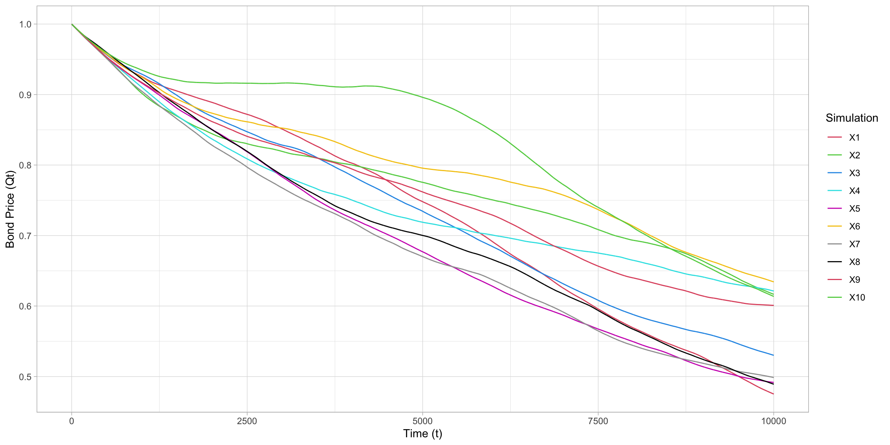
We expect the distribution of \(Q_t\) to be log-normal as the integral \(\int_0^t R_s\) is normal - as it is a linear combination of normal random variables. We can check the distribution of \(Q_t\) for the fixed value of \(t=0\) by simulating 1000 realizations of \(\log(1_{10})\) and approximating their empirical distribution using a histogram - shown in Figure 10 below. From this histogram we can see that the distribution of \(\log(Q_{t})\) appears to show the characteristic bell curve shape we would expect.
# simulate 1000 realizations of Rt at t=10 (n=1000, delta=10/n so t=n*delta=10)
N1=1000
OU1=rOU(n, N1, Delta, theta, sigma)
# define results matrix
R1=matrix(0, nrow=N1, ncol=n+1)
# loop to calculate results
for(i in 1:N1){
R1[i,]=exp(-theta*OU1$times)*R0+(1-exp(-theta*OU1$times))*mu+OU1$X[i,]
}
# calculating Q
Q=rep(0, N1)
for(i in 1:N1){
Q[i]=exp(-Delta*sum(R1[i, 2:(n+1)]))
}
# produce plot
fig9 = data.frame(Q, N1)
ggplot(data = fig9, aes(x=Q))+ geom_histogram(bins=30)+
xlab("log(Q)") + ylab("Frequency")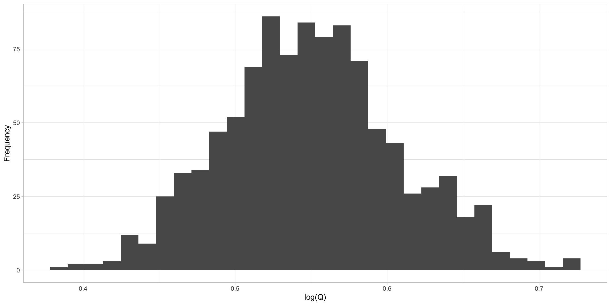
We can evidence this further by using a Q-Q plot to compare the empirical distribution we have simulated with the normal distribution - shown in Figure 11 below. From this plot we see clear evidence that the distribution is normal due to the linearity of the points generated.
# produce Q-Q plot
plot10 = ggplot(fig9, aes(sample=Q))+stat_qq()
plot10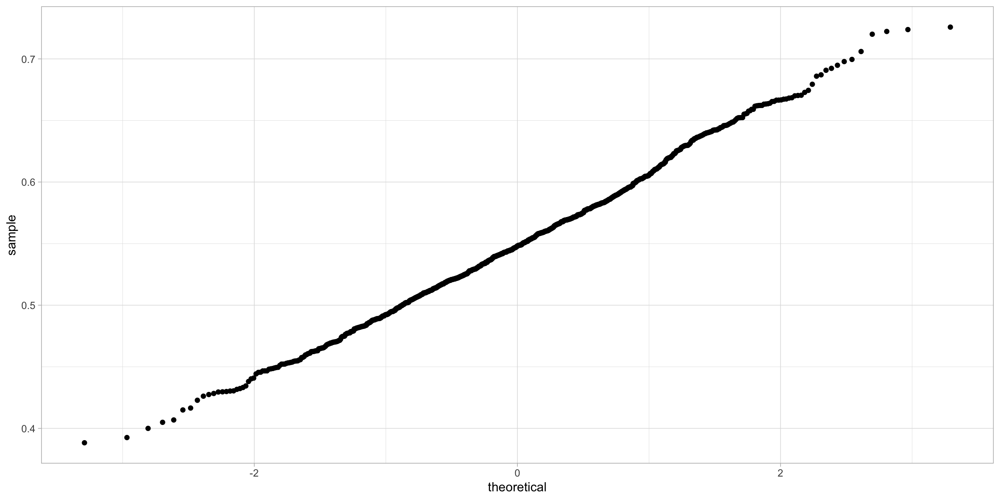
Conclusion
Both models discussed in this project come with several limitations. Firstly, the Black- Scholes model assumes that an option can only be exercised at expiration which limits its use to European options (as US options can be exercised before expiration). The model also makes assumptions that do not tend to hold in real world applications such as that no dividends are paid out during the life of the option, that markets are efficient, that there are no transaction costs in buying the option, that the risk-free rate and volatility of the underlying assets are known and constant and that the returns on the underlying assets are known and constant.
The main disadvantage of the Vasicek model that has come to light since the global financial crisis is that the model does not allow for interest rates to dip below zero and become negative. This issue has been fixed in several models that have been developed since the Vasicek model such as the exponential Vasicek model and the Cox-Ingersoll-Ross model for estimating interest rate changes and further investigation into these models would be a useful topic of further research.